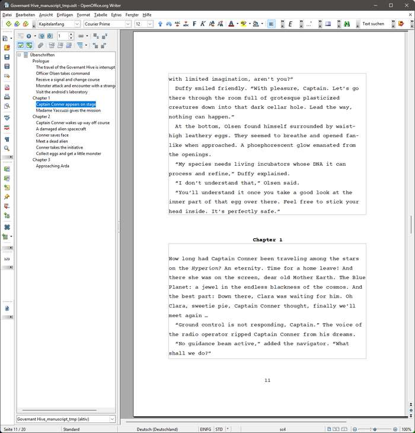

Organizer software for novelists#
Keep the big picture of your novel in sight as you write it with OpenOffice or LibreOffice.
novelibre is an add-on to OpenOffice or LibreOffice that helps to break down large novels into parts, chapters and sections, all of which are provided with additional information called metadata. The metadata remain permanently associated with the chapters and sections in the ODT manuscript throughout the work on the novel. novelibre makes information about the story world accessible and relates characters, locations, and items to the sections. novelibre can hold information about plot lines and plot points that are assigned to the sections.
Read more about the idea and purpose of novelibre.
This is how the novelibre organizer workspace looks like:

novelibre screenshot#
This is the manuscript to work on. novelibre generated it and passed it to LibreOffice Writer:

LibreOffice screenshot#
Requirements#
Screen resolution of at least 900 pixels in height.
Windows or Linux. Mac OS support is experimental, see discussion.
Python version 3.7+.
With Windows 8-11, use version 3.9.10 or above.
With Vista and Windows 7, use version 3.7.2.
Linux users: Make sure you have the tkinter support for Python 3 installed. For Ubuntu, the package is called python3-tk, for Fedora it may be python3-tkinter.
Either LibreOffice or OpenOffice.
General note about the fitness for use#
I use the program myself and fix bugs immediately if I notice any. As far as I can tell, novelibre runs fast and reliably under Windows and Linux. The development phase has now come to an end. Nevertheless it is recommended to check for updates from time to time, as well as for the plugins.
Download novelibre#
Links#
novelibre User guide - Online manual in English.
novelibre Wiki - Tutorials.
Contact#
novelibre discussions - The right place to give feedback, ask questions, and make suggestions.
novelibre issues - The right place to report bugs.
Credits#
The novelibre logo is made using the free Pusab font by Ryoichi Tsunekawa, Flat-it.
See also#
OpenOffice/LibreOffice extensions#
Writer macros that may come in handy when editing your manuscript.
novelibre-tools: OpenOffice/LibreOffice extension for processing documents in connection with novelibre.
StyleSwitcher: Quickly switch between the style sheets of different document templates.
curly: Conversion of “curly quotes”, typographical apostrophes, ellipses and so on in several languages.
emph: Use character styles instead of direct formatting to mark up text.
License#
This is Open Source software, and novelibre is licensed under GPLv3. See the GNU General Public License website for more details, or consult the LICENSE file.